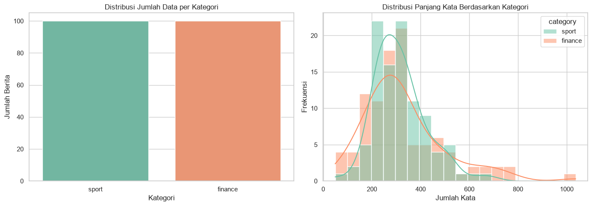
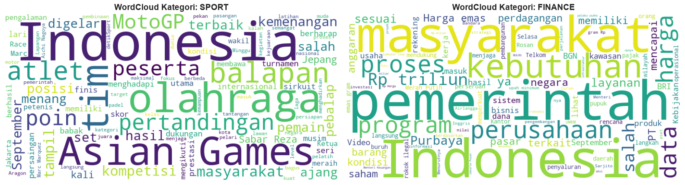
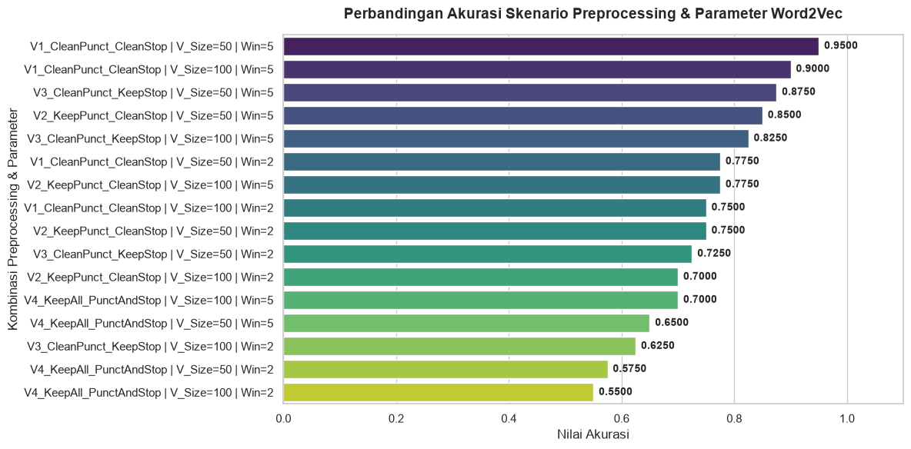

Word2Vec Skip-gram#
Ringkasan Proses#
Notebook ini membahas cara kerja model Word2Vec dengan arsitektur Skip-gram pada dua level:
Contoh kecil untuk memahami pasangan target-konteks dan representasi vektor kata.
Penerapan pada dataset berita untuk mengevaluasi pengaruh preprocessing dan parameter model terhadap akurasi klasifikasi.
Tujuan utama adalah melihat bagaimana pemilihan window, ukuran vektor, dan preprocessing memengaruhi kualitas representasi kata sebelum digunakan untuk klasifikasi dokumen.
1. Penerapan Word2Vec Skip-gram pada teks#
from gensim.models import Word2Vec
# 1. Siapkan 3 kalimat panjang yang sudah di-tokenisasi
sentences = [
["mahasiswa", "teknik", "informatika", "belajar", "pemrograman", "python", "dan", "basis", "data", "sql"],
["mahasiswa", "teknik", "informatika", "membuat", "aplikasi", "web", "menggunakan", "laravel", "dan", "docker"],
["dosen", "sistem", "informasi", "mengajar", "mata", "kuliah", "kecerdasan", "buatan", "di", "kampus"]
]
# Tentukan ukuran window
window_size = 2
vector_size = 6 # Ukuran vektor embedding
# 2. Fungsi manual untuk menampilkan pasangan Target dan Konteks (Metode Skip-gram)
print("=== DAFTAR PASANGAN TARGET DAN KONTEKS (Window = 2) ===")
for idx_sent, sentence in enumerate(sentences, 1):
print(f"\nKalimat {idx_sent}: {' '.join(sentence)}")
for i, target_word in enumerate(sentence):
# Tentukan batas kiri dan kanan berdasarkan window
start = max(0, i - window_size)
end = min(len(sentence), i + window_size + 1)
# Ambil kata konteks di sekitar target (kecuali target itu sendiri)
context_words = [sentence[j] for j in range(start, end) if j != i]
print(f" Target: '{target_word:<12}' -> Konteks: {context_words}")
print("\n" + "="*50 + "\n")
=== DAFTAR PASANGAN TARGET DAN KONTEKS (Window = 2) ===
Kalimat 1: mahasiswa teknik informatika belajar pemrograman python dan basis data sql
Target: 'mahasiswa ' -> Konteks: ['teknik', 'informatika']
Target: 'teknik ' -> Konteks: ['mahasiswa', 'informatika', 'belajar']
Target: 'informatika ' -> Konteks: ['mahasiswa', 'teknik', 'belajar', 'pemrograman']
Target: 'belajar ' -> Konteks: ['teknik', 'informatika', 'pemrograman', 'python']
Target: 'pemrograman ' -> Konteks: ['informatika', 'belajar', 'python', 'dan']
Target: 'python ' -> Konteks: ['belajar', 'pemrograman', 'dan', 'basis']
Target: 'dan ' -> Konteks: ['pemrograman', 'python', 'basis', 'data']
Target: 'basis ' -> Konteks: ['python', 'dan', 'data', 'sql']
Target: 'data ' -> Konteks: ['dan', 'basis', 'sql']
Target: 'sql ' -> Konteks: ['basis', 'data']
Kalimat 2: mahasiswa teknik informatika membuat aplikasi web menggunakan laravel dan docker
Target: 'mahasiswa ' -> Konteks: ['teknik', 'informatika']
Target: 'teknik ' -> Konteks: ['mahasiswa', 'informatika', 'membuat']
Target: 'informatika ' -> Konteks: ['mahasiswa', 'teknik', 'membuat', 'aplikasi']
Target: 'membuat ' -> Konteks: ['teknik', 'informatika', 'aplikasi', 'web']
Target: 'aplikasi ' -> Konteks: ['informatika', 'membuat', 'web', 'menggunakan']
Target: 'web ' -> Konteks: ['membuat', 'aplikasi', 'menggunakan', 'laravel']
Target: 'menggunakan ' -> Konteks: ['aplikasi', 'web', 'laravel', 'dan']
Target: 'laravel ' -> Konteks: ['web', 'menggunakan', 'dan', 'docker']
Target: 'dan ' -> Konteks: ['menggunakan', 'laravel', 'docker']
Target: 'docker ' -> Konteks: ['laravel', 'dan']
Kalimat 3: dosen sistem informasi mengajar mata kuliah kecerdasan buatan di kampus
Target: 'dosen ' -> Konteks: ['sistem', 'informasi']
Target: 'sistem ' -> Konteks: ['dosen', 'informasi', 'mengajar']
Target: 'informasi ' -> Konteks: ['dosen', 'sistem', 'mengajar', 'mata']
Target: 'mengajar ' -> Konteks: ['sistem', 'informasi', 'mata', 'kuliah']
Target: 'mata ' -> Konteks: ['informasi', 'mengajar', 'kuliah', 'kecerdasan']
Target: 'kuliah ' -> Konteks: ['mengajar', 'mata', 'kecerdasan', 'buatan']
Target: 'kecerdasan ' -> Konteks: ['mata', 'kuliah', 'buatan', 'di']
Target: 'buatan ' -> Konteks: ['kuliah', 'kecerdasan', 'di', 'kampus']
Target: 'di ' -> Konteks: ['kecerdasan', 'buatan', 'kampus']
Target: 'kampus ' -> Konteks: ['buatan', 'di']
==================================================
# 3. Latih model Word2Vec dengan arsitektur Skip-gram (sg=1)
model = Word2Vec(
sentences=sentences,
vector_size=vector_size,
window=window_size,
min_count=1,
sg=1,
seed=42
)
# 4. Menampilkan Hasil Vector Bobot (Embedding) untuk Setiap Kata Unik
print("=== VEKTOR BOBOT AKHIR (Embedding Matrix) per KATA ===")
for word in model.wv.index_to_key:
vector = model.wv[word]
formatted_vector = [round(val, 4) for val in vector]
print(f"Kata: {word:<15} -> Vektor: {formatted_vector}")
=== VEKTOR BOBOT AKHIR (Embedding Matrix) per KATA ===
Kata: dan -> Vektor: [np.float32(-0.1369), np.float32(0.0913), np.float32(0.0515), np.float32(-0.0204), np.float32(-0.0223), np.float32(0.1195)]
Kata: informatika -> Vektor: [np.float32(-0.138), np.float32(0.0659), np.float32(-0.0996), np.float32(-0.1354), np.float32(0.0089), np.float32(0.1585)]
Kata: teknik -> Vektor: [np.float32(0.0786), np.float32(0.087), np.float32(0.0725), np.float32(0.0954), np.float32(0.0044), np.float32(-0.124)]
Kata: mahasiswa -> Vektor: [np.float32(0.1132), np.float32(-0.0164), np.float32(0.0), np.float32(-0.0431), np.float32(-0.1058), np.float32(0.1423)]
Kata: kampus -> Vektor: [np.float32(0.0939), np.float32(0.048), np.float32(-0.0324), np.float32(0.1075), np.float32(0.0151), np.float32(-0.0189)]
Kata: di -> Vektor: [np.float32(-0.0165), np.float32(-0.0909), np.float32(-0.1356), np.float32(0.018), np.float32(0.1293), np.float32(-0.1455)]
Kata: buatan -> Vektor: [np.float32(0.1194), np.float32(0.1092), np.float32(-0.0744), np.float32(0.0439), np.float32(-0.1116), np.float32(0.086)]
Kata: kecerdasan -> Vektor: [np.float32(0.0668), np.float32(-0.0485), np.float32(-0.144), np.float32(0.1569), np.float32(-0.0181), np.float32(0.131)]
Kata: kuliah -> Vektor: [np.float32(0.0592), np.float32(0.0928), np.float32(0.0869), np.float32(-0.1019), np.float32(-0.0454), np.float32(-0.0111)]
Kata: mata -> Vektor: [np.float32(-0.0008), np.float32(-0.1521), np.float32(0.0156), np.float32(-0.1153), np.float32(0.0811), np.float32(0.061)]
Kata: mengajar -> Vektor: [np.float32(0.1407), np.float32(0.0816), np.float32(-0.0443), np.float32(0.1557), np.float32(-0.0298), np.float32(-0.058)]
Kata: informasi -> Vektor: [np.float32(0.1352), np.float32(-0.0432), np.float32(-0.1411), np.float32(-0.0102), np.float32(0.0985), np.float32(-0.1035)]
Kata: sistem -> Vektor: [np.float32(-0.0126), np.float32(-0.1232), np.float32(0.0624), np.float32(-0.0083), np.float32(-0.0568), np.float32(-0.0908)]
Kata: dosen -> Vektor: [np.float32(0.0216), np.float32(0.0566), np.float32(0.147), np.float32(-0.0209), np.float32(-0.1131), np.float32(0.1108)]
Kata: docker -> Vektor: [np.float32(0.0433), np.float32(0.0668), np.float32(-0.1343), np.float32(-0.0625), np.float32(0.0893), np.float32(0.1108)]
Kata: laravel -> Vektor: [np.float32(-0.0216), np.float32(0.1016), np.float32(0.1139), np.float32(-0.0375), np.float32(0.1327), np.float32(-0.0706)]
Kata: menggunakan -> Vektor: [np.float32(-0.0868), np.float32(0.0608), np.float32(0.0458), np.float32(-0.1202), np.float32(0.1108), np.float32(-0.1)]
Kata: web -> Vektor: [np.float32(0.1016), np.float32(-0.1642), np.float32(0.0992), np.float32(0.0956), np.float32(0.0934), np.float32(0.0549)]
Kata: aplikasi -> Vektor: [np.float32(-0.0095), np.float32(0.0684), np.float32(-0.0743), np.float32(0.0936), np.float32(0.0186), np.float32(-0.0137)]
Kata: membuat -> Vektor: [np.float32(0.0019), np.float32(0.0229), np.float32(-0.1542), np.float32(-0.1201), np.float32(-0.0848), np.float32(-0.1285)]
Kata: sql -> Vektor: [np.float32(-0.0201), np.float32(0.0561), np.float32(0.0515), np.float32(-0.0096), np.float32(0.1184), np.float32(0.0217)]
Kata: data -> Vektor: [np.float32(-0.1404), np.float32(0.0884), np.float32(0.0249), np.float32(0.0449), np.float32(0.0218), np.float32(0.0179)]
Kata: basis -> Vektor: [np.float32(-0.1365), np.float32(0.0198), np.float32(0.0985), np.float32(-0.0654), np.float32(0.0341), np.float32(-0.1563)]
Kata: python -> Vektor: [np.float32(-0.0509), np.float32(-0.021), np.float32(0.1608), np.float32(-0.0954), np.float32(-0.0745), np.float32(-0.0304)]
Kata: pemrograman -> Vektor: [np.float32(0.1643), np.float32(0.1178), np.float32(-0.1552), np.float32(-0.0887), np.float32(0.1073), np.float32(-0.1472)]
Kata: belajar -> Vektor: [np.float32(0.1187), np.float32(-0.0728), np.float32(0.1393), np.float32(-0.0689), np.float32(-0.0219), np.float32(0.054)]
Implementasi pada data berita#
Tujuan Analisis pada Dataset Berita
Pada bagian ini, data berita digunakan sebagai contoh data nyata untuk menguji apakah model Word2Vec Skip-gram dapat menghasilkan representasi kata yang berguna untuk klasifikasi kategori berita.
Proses yang dilakukan meliputi:
memahami struktur dan distribusi data,
memeriksa panjang teks dan kategori,
melihat kata-kata dominan melalui wordcloud,
membersihkan teks dengan berbagai skenario preprocessing,
melatih model Word2Vec dan membangun vektor dokumen,
mengevaluasi hasil menggunakan Naive Bayes.
Dengan pendekatan ini, kita dapat membandingkan bagaimana variasi preprocessing dan parameter model memengaruhi kualitas representasi teks.
1. Install library yang dibutuhkan#
pip install matplotlib seaborn nltk gensim pandas scikit-learn wordcloud
Requirement already satisfied: matplotlib in D:\KULIAH\TUGAS-TUGAS\SEMESTER 7\PPW\PPW\ppw\Lib\site-packages (3.11.2)
Requirement already satisfied: seaborn in D:\KULIAH\TUGAS-TUGAS\SEMESTER 7\PPW\PPW\ppw\Lib\site-packages (0.13.2)
Requirement already satisfied: nltk in D:\KULIAH\TUGAS-TUGAS\SEMESTER 7\PPW\PPW\ppw\Lib\site-packages (3.10.3)
Requirement already satisfied: gensim in D:\KULIAH\TUGAS-TUGAS\SEMESTER 7\PPW\PPW\ppw\Lib\site-packages (4.4.0)
Requirement already satisfied: pandas in D:\KULIAH\TUGAS-TUGAS\SEMESTER 7\PPW\PPW\ppw\Lib\site-packages (3.0.5)
Requirement already satisfied: scikit-learn in D:\KULIAH\TUGAS-TUGAS\SEMESTER 7\PPW\PPW\ppw\Lib\site-packages (1.9.1)
Requirement already satisfied: wordcloud in D:\KULIAH\TUGAS-TUGAS\SEMESTER 7\PPW\PPW\ppw\Lib\site-packages (1.9.6)
Requirement already satisfied: contourpy>=1.0.1 in D:\KULIAH\TUGAS-TUGAS\SEMESTER 7\PPW\PPW\ppw\Lib\site-packages (from matplotlib) (1.4.0)
Requirement already satisfied: cycler>=0.10 in D:\KULIAH\TUGAS-TUGAS\SEMESTER 7\PPW\PPW\ppw\Lib\site-packages (from matplotlib) (0.12.1)
Requirement already satisfied: fonttools>=4.28.2 in D:\KULIAH\TUGAS-TUGAS\SEMESTER 7\PPW\PPW\ppw\Lib\site-packages (from matplotlib) (4.66.1)
Requirement already satisfied: kiwisolver>=1.3.1 in D:\KULIAH\TUGAS-TUGAS\SEMESTER 7\PPW\PPW\ppw\Lib\site-packages (from matplotlib) (1.5.1)
Requirement already satisfied: numpy>=1.25 in D:\KULIAH\TUGAS-TUGAS\SEMESTER 7\PPW\PPW\ppw\Lib\site-packages (from matplotlib) (2.5.3)
Requirement already satisfied: packaging>=20.0 in D:\KULIAH\TUGAS-TUGAS\SEMESTER 7\PPW\PPW\ppw\Lib\site-packages (from matplotlib) (26.3)
Requirement already satisfied: pillow>=9 in D:\KULIAH\TUGAS-TUGAS\SEMESTER 7\PPW\PPW\ppw\Lib\site-packages (from matplotlib) (12.3.0)
Requirement already satisfied: pyparsing>=3 in D:\KULIAH\TUGAS-TUGAS\SEMESTER 7\PPW\PPW\ppw\Lib\site-packages (from matplotlib) (3.3.3)
Requirement already satisfied: python-dateutil>=2.7 in D:\KULIAH\TUGAS-TUGAS\SEMESTER 7\PPW\PPW\ppw\Lib\site-packages (from matplotlib) (2.9.0.post0)
Requirement already satisfied: defusedxml in D:\KULIAH\TUGAS-TUGAS\SEMESTER 7\PPW\PPW\ppw\Lib\site-packages (from nltk) (0.7.1)
Requirement already satisfied: click in D:\KULIAH\TUGAS-TUGAS\SEMESTER 7\PPW\PPW\ppw\Lib\site-packages (from nltk) (8.5.0)
Requirement already satisfied: joblib in D:\KULIAH\TUGAS-TUGAS\SEMESTER 7\PPW\PPW\ppw\Lib\site-packages (from nltk) (1.6.0)
Requirement already satisfied: regex>=2021.8.3 in D:\KULIAH\TUGAS-TUGAS\SEMESTER 7\PPW\PPW\ppw\Lib\site-packages (from nltk) (2026.9.3)
Requirement already satisfied: tqdm in D:\KULIAH\TUGAS-TUGAS\SEMESTER 7\PPW\PPW\ppw\Lib\site-packages (from nltk) (4.70.1)
Requirement already satisfied: scipy>=1.7.0 in D:\KULIAH\TUGAS-TUGAS\SEMESTER 7\PPW\PPW\ppw\Lib\site-packages (from gensim) (1.18.1)
Requirement already satisfied: smart_open>=1.8.1 in D:\KULIAH\TUGAS-TUGAS\SEMESTER 7\PPW\PPW\ppw\Lib\site-packages (from gensim) (8.0.1)
Requirement already satisfied: tzdata in D:\KULIAH\TUGAS-TUGAS\SEMESTER 7\PPW\PPW\ppw\Lib\site-packages (from pandas) (2026.3)
Requirement already satisfied: narwhals>=2.0.1 in D:\KULIAH\TUGAS-TUGAS\SEMESTER 7\PPW\PPW\ppw\Lib\site-packages (from scikit-learn) (2.26.0)
Requirement already satisfied: threadpoolctl>=3.5.0 in D:\KULIAH\TUGAS-TUGAS\SEMESTER 7\PPW\PPW\ppw\Lib\site-packages (from scikit-learn) (3.7.0)
Requirement already satisfied: cloudpickle>=3.0 in D:\KULIAH\TUGAS-TUGAS\SEMESTER 7\PPW\PPW\ppw\Lib\site-packages (from joblib->nltk) (3.1.2)
Requirement already satisfied: six>=1.5 in D:\KULIAH\TUGAS-TUGAS\SEMESTER 7\PPW\PPW\ppw\Lib\site-packages (from python-dateutil>=2.7->matplotlib) (1.17.0)
Requirement already satisfied: wrapt in D:\KULIAH\TUGAS-TUGAS\SEMESTER 7\PPW\PPW\ppw\Lib\site-packages (from smart_open>=1.8.1->gensim) (2.4.1)
Requirement already satisfied: colorama in D:\KULIAH\TUGAS-TUGAS\SEMESTER 7\PPW\PPW\ppw\Lib\site-packages (from tqdm->nltk) (0.4.6)
Note: you may need to restart the kernel to use updated packages.
import pandas as pd
import numpy as np
import re
import matplotlib.pyplot as plt
import seaborn as sns
2. Understanding data#
Tahap ini penting untuk memastikan dataset yang akan diproses benar-benar sesuai dengan kebutuhan analisis. Kita mengecek:
jumlah baris dan kolom,
tipe data masing-masing kolom,
keberadaan nilai kosong,
sampel teks berita yang akan diproses,
distribusi kategori dan panjang teks.
Jika struktur data tidak sesuai, model yang dibangun dapat menghasilkan hasil yang tidak akurat atau sulit diinterpretasi. Oleh karena itu, pemahaman awal data menjadi dasar sebelum preprocessing dan modeling.
# Load dataset
file_path = 'dataset/hasil_scrapping_detik_200.csv'
df = pd.read_csv(file_path)
# Menampilkan 5 baris pertama data untuk memastikan data berhasil dibaca
print(f"Total baris dan kolom pada dataset: {df.shape}")
display(df.head(5))
display(df.tail(5))
Total baris dan kolom pada dataset: (200, 7)
| url | category | title | date | text | title_length | text_length | |
|---|---|---|---|---|---|---|---|
| 0 | https://sport.detik.com/raket/d-8656258/mens-w... | sport | Men's World Tennis Championship: Rifqi dan Raf... | Kamis, 10 Sep 2026 04:42 WIB | Dua petenis Indonesia, Muhammad Rifqi Fitriadi... | 73 | 1489 |
| 1 | https://sport.detik.com/raket/d-8656218/kevin-... | sport | Kevin Sanjaya Antusias Lihat Semangat Talenta ... | Kamis, 10 Sep 2026 01:15 WIB | Audisi Umum PB Djarum 2026 sedang berlangsung ... | 67 | 1829 |
| 2 | https://sport.detik.com/sport-lain/d-8656170/a... | sport | Atlet Muda Modern Pentathlon Punya Kesempatan ... | Rabu, 09 Sep 2026 23:50 WIB | Modern Pentathlon akan dipertandingkan dalam m... | 63 | 2861 |
| 3 | https://sport.detik.com/sport-lain/d-8656176/r... | sport | Romy Tahrizi Juara Nasional Shifter 2026 Bersa... | Rabu, 09 Sep 2026 23:15 WIB | Kejuaraan Nasional Gokart 2026 yang berlangsun... | 60 | 4791 |
| 4 | https://sport.detik.com/sport-lain/d-8656181/a... | sport | Asian Games: Ketum PBTI Yakin Taekwondo Bisa B... | Rabu, 09 Sep 2026 22:22 WIB | Asian Games 2026 tak lama lagi akan dimulai. K... | 74 | 1624 |
| url | category | title | date | text | title_length | text_length | |
|---|---|---|---|---|---|---|---|
| 195 | https://finance.detik.com/berita-ekonomi-bisni... | finance | TelkomProperty Ungkap Pemanfaatan Graha Merah ... | Selasa, 08 Sep 2026 18:50 WIB | PT Graha Sarana Duta (TelkomProperty), sebagai... | 76 | 1948 |
| 196 | https://finance.detik.com/berita-ekonomi-bisni... | finance | Harga Masker Mahal Imbas Abu Anak Krakatau, Pe... | Selasa, 08 Sep 2026 17:58 WIB | Ketua Badan Perlindungan Konsumen Nasional (BP... | 71 | 2205 |
| 197 | https://finance.detik.com/energi/d-8654238/per... | finance | Pertamina Waspada Solar Subsidi 'Bocor', Selis... | Selasa, 08 Sep 2026 17:53 WIB | PT Pertamina Patra Niaga mewaspadai adanya pot... | 71 | 1682 |
| 198 | https://finance.detik.com/berita-ekonomi-bisni... | finance | TikTok & Tokopedia Buka Suara soal Kabar Bloki... | Selasa, 08 Sep 2026 17:43 WIB | Tokopedia dan TikTok Shop buka suara terkait l... | 66 | 3217 |
| 199 | https://finance.detik.com/berita-ekonomi-bisni... | finance | Purbaya Ngaku Tak Pusingkan Anggaran BGN, Tahu... | Selasa, 08 Sep 2026 17:32 WIB | Menteri Keuangan (Menkeu) Purbaya Yudhi Sadewa... | 71 | 1889 |
# Informasi umum mengenai struktur DataFrame
print("=== INFO DATASET ===")
df.info()
print("\n=== CEK MISSING VALUE ===")
print(df.isnull().sum())
print("\n=== CONTOH DATA MENTAH (RAW TEXT) ===")
column_name = 'text' if 'text' in df.columns else df.columns[0]
for i, text_sample in enumerate(df[column_name].head(3), 1):
print(f"{i}. {text_sample}\n")
# cek distribusinya
if 'label' in df.columns or 'category' in df.columns:
label_col = 'label' if 'label' in df.columns else 'category'
print(f"\n=== DISTRIBUSI KELAS ({label_col}) ===")
print(df[label_col].value_counts())
=== INFO DATASET ===
<class 'pandas.DataFrame'>
RangeIndex: 200 entries, 0 to 199
Data columns (total 7 columns):
# Column Non-Null Count Dtype
--- ------ -------------- -----
0 url 200 non-null str
1 category 200 non-null str
2 title 200 non-null str
3 date 197 non-null str
4 text 200 non-null str
5 title_length 200 non-null int64
6 text_length 200 non-null int64
dtypes: int64(2), str(5)
memory usage: 11.1 KB
=== CEK MISSING VALUE ===
url 0
category 0
title 0
date 3
text 0
title_length 0
text_length 0
dtype: int64
=== CONTOH DATA MENTAH (RAW TEXT) ===
1. Dua petenis Indonesia, Muhammad Rifqi Fitriadi dan Rafalentino Ali Da Costa, melangkah ke Babak Kedua Seri V Men's World Tennis Championship 2026.
Pada laga Babak pertama tunggal putra ITF World Tennis Tour M-15 di Bali Beach Country Club, Nusa Dua, Rabu (9/9/2026) Rafalentino menghadapi petenis India Shanker Heisnam.
Petenis 16 tahun itu dengan mudah menang dua set langsung, 6-4 dan 6-1, dalam tempo 59 menit. Ini mengulangi kemenangan atas Shanker di seri IV pekan lalu.
"Saya sudah mengalahkan Shanker pekan lalu sehingga termotivasi untuk mengulanginya. Saya tetap bermain tanpa beban di babak berikutnya dan fokus dengan strategi agar mendapat hasil maksimal," ujar Rafalentino dalam rilis kepada detikSport.
Langkah serupa dilakoni Rifqi Fitriadi yang bermain di lapangan F menghadapi wakil Swedia Eric Ahren Moonga. Rifqi dengan karakternya menyerang dari garis belakang mendominasi permainan sebelum menang 6-2 dan 6-2 dalam tempo 1 jam 8 menit.
Pada babak kedua, Rifqi bertemu petenis kualifikasi asal Australia Hayden Jones yang menang 6-1 6-1 dari Raghav Jaysinghani.
Sementara itu tuan rumah harus kehilangan satu wakilnya di babak utama, setelah perjuangan Anthony Susanto selama 2 jam 53 menit saat menantang unggulan keenam asal Selandia Baru, Isaac Becroft, gagal membuahkan kemenangan.
Keunggulan 7-6 tiebreak 4 di set pertama, ternyata tak mampu di pertahankan oleh petenis 29 tahun itu. Isaac yang merupakan runner-up Seri IV menang rubber rame 6-2 dan 7-5.
(mrp/yna)
2. Audisi Umum PB Djarum 2026 sedang berlangsung di Kudus. Kevin Sanjaya jadi teringat momen saat dirinya berupaya mengejar mimpi.
Audisi Umum PB Djarum 2026 Kudus dihelat di GOR Djarum, Jati, pada Rabu (9/9) hingga Minggu (13/9). Tak kurang, sebanyak 1.601 peserta yang berasal dari berbagai penjuru Indonesia mulai dari Sumatera hingga Papua.
Mantan atlet bulutangkis Indonesia ternama, Kevin Sanjaya, ikut terlibat dalam Tim Pencari Bakat PB Djarum. Dia juga merupakan sosok legenda di PB Djarum.
"Hadir di GOR Jati membuat saya bernostalgia semasa pertama kali mengikuti Audisi Umum PB Djarum di tahun 2006 lalu. Saya senang melihat perjuangan adik-adik yang begitu gigih. Menurut saya, mentalitas bertanding dan siap akan hasil apapun di lapangan menjadi poin penting untuk menjadi pebulutangkis andal. Jadi antara keinginan untuk menang dan rasa takut kalah itu harus seimbang," kata Kevin dalam rilis yang diterima detikSport.
"Melihat antusiasme yang luar biasa dari adik-adik di audisi kali ini, saya rasa ini merupakan angin segar bagi regenerasi bulutangkis kita karena merekalah calon-calon pahlawan olahraga untuk Indonesia di masa depan," sambungnya.
Para bibit potensial ini tersebar di tiga kategori usia yaitu U-11, KU-11, dan KU-12 baik putra maupun putri. Adapun Kudus menjadi kota ketiga pelaksanaan proses seleksi pebulutangkis muda berkualitas super setelah lebih dahulu diadakan di Pekanbaru (Juli) dan Makassar (Agustus).
"Bertepatan dengan Hari Olahraga Nasional, kami ingin terus mengambil peran dalam mendukung kemajuan olahraga Indonesia melalui pembinaan atlet sejak usia dini. Audisi Umum PB Djarum menjadi salah satu langkah untuk menemukan talenta-talenta muda potensial dari berbagai daerah," kata Program Director Bakti Olahraga Djarum Foundation sekaligus Ketua PB Djarum, Yoppy Rosimin.
(ran/ran)
3. Modern Pentathlon akan dipertandingkan dalam momen Hari Ulang Tahun (HUT) TNI ke-81. Ketua Umum Pengurus Pusat Modern Pentathlon Indonesia (PP MPI), Marsekal Muda (Marsda) TNI Purwoko Aji Prabowo, menyampaikan apresiasi.
Modern Pentathlon adalah cabang olahraga Olimpiade yang menggabungkan lima disiplin berbeda: anggar, renang, lari, menembak, dan rintangan (obstacle) yang menggantikan disiplin berkuda mulai tahun 2025.
Modern Pentathlon Indonesia Open 2026 yang memperebutkan Piala Panglima TNI ini dijadwalkan akan berlangsung di Akademi Angkatan Udara (AAU) Yogyakarta, 23-25 September 2026.
"Merupakan suatu kehormatan modern pentathlon menjadi satu dari delapan cabang olahraga yang dipertandingkan dalam rangka memperingati HUT ke-81 TNI tahun 2026. Kami siap mensukseskan Modern Pentathlon Indonesia Open 2026 memperebutkan Piala Panglima TNI," kata Purwoko Aji Prabowo yang mendampingi Panglima Koopsudnas (Pangkoopsudnas) Marsekal Madya (Marsdya) TNI Minggit Tribowo.
"Keberadaan Modern Pentathlon Indonesia Open 2026 ini mewujudkan keinginan kami untuk terus menggemakan pembinaan Modern Pentathlon yang mampu membentuk karakter generasi muda yang berdisiplin tinggi, berdaya juang, dan bertalenta juara," sambungnya dalam wawancara dengan medai di Ruang Leo Watimena Koopsudnas, Lanud Halim Perdanakusuma, Jakarta Timur, Selasa (8/9/2026).
Purwoko Aji Prabowo juga menyampaikan kabar gembira bagi para atlet muda Modern Pentathlon yang tampil dalam perebutan Piala Panglima TNI. Dia memastikan PP MPI akan mengawal serta memfasilitasi para pemenang di kategori U-19 yang memiliki minat untuk melanjutkan karier di dunia militer melalui jalur prestasi.
"Kami membuka kesempatan bagi para juara di kategori U-19, jika tertarik bergabung menjadi anggota TNI, akan coba kami fasilitasi. Kesempatan dari Panglima TNI ini terbuka lebar bagi bibit-bibit muda berprestasi," pungkas Marsda TNI Purwoko Aji.
Kejuaraan Piala Panglima TNI 2026 membuka persaingan untuk kategori Senior serta U-19 (putra dan putri). Tiga nomor utama yang siap menguji ketahanan fisik dan mental para atlet meliputi: Pentathlon, Triathle, dan Biathle.
Lebih jauh Purwoko Aji menyampaiakan, perkembangan prestasi Modern Pentathlon Indonesia mengalami peningkatan prestasi cukup signifikan. Pada SEA Games Thailand 2025 lalu, Timnas Modern Pentathlon Indonesia telah menyumbangkan 1 medali emas, 3 perak, dan 1 perunggu. Kini, PP MPI sudah menyiapkan 5 atlet yang bakal tampil di Asian Games Aichi-Nagoya 2026.
"Kita sudah mempersiapkan kelima atlet Modern Petathlon Indonesia dengan maksimal sehingga bisa memberikan yang terbaik pada saat tampil di Asian Games 2026 nanti. Khusus Modern Pentathlon Indonesia Open 2026 ini, kita berharap muncul bibit-bibit potensial yang akan dibina untuk persiapan menghadapi single dan multi event internasional ke depan," tutupnya.
(ran/aff)
=== DISTRIBUSI KELAS (category) ===
category
sport 100
finance 100
Name: count, dtype: int64
import matplotlib.pyplot as plt
import seaborn as sns
# Pastikan setting style seaborn
sns.set_theme(style="whitegrid")
# Hitung jumlah kata per teks berita
df['word_count'] = df['text'].apply(lambda x: len(str(x).split()))
print("=== STATISTIK PANJANG KATA (WORD COUNT) ===")
print(df['word_count'].describe())
# Visualisasi Distribusi Kategori & Panjang Kata
fig, axes = plt.subplots(1, 2, figsize=(14, 5))
# 1. Plot Distribusi Kategori
sns.countplot(data=df, x='category', ax=axes[0], palette='Set2')
axes[0].set_title('Distribusi Jumlah Data per Kategori')
axes[0].set_xlabel('Kategori')
axes[0].set_ylabel('Jumlah Berita')
# 2. Plot Distribusi Panjang Kata (Word Count)
sns.histplot(data=df, x='word_count', hue='category', kde=True, bins=20, ax=axes[1], palette='Set2')
axes[1].set_title('Distribusi Panjang Kata Berdasarkan Kategori')
axes[1].set_xlabel('Jumlah Kata')
axes[1].set_ylabel('Frekuensi')
plt.tight_layout()
plt.show()
=== STATISTIK PANJANG KATA (WORD COUNT) ===
count 200.000000
mean 321.910000
std 140.401298
min 49.000000
25% 238.000000
50% 299.500000
75% 370.000000
max 1037.000000
Name: word_count, dtype: float64
C:\Users\ADVAN\AppData\Local\Temp\ipykernel_11400\3046655590.py:17: FutureWarning:
Passing `palette` without assigning `hue` is deprecated and will be removed in v0.14.0. Assign the `x` variable to `hue` and set `legend=False` for the same effect.
sns.countplot(data=df, x='category', ax=axes[0], palette='Set2')

from wordcloud import WordCloud
import nltk
from nltk.corpus import stopwords
nltk.download('stopwords')
list_stopwords = set(stopwords.words('indonesian'))
categories = df['category'].unique()
fig, axes = plt.subplots(1, len(categories), figsize=(16, 6))
for i, cat in enumerate(categories):
# Gabungkan semua teks dalam satu kategori tertentu
text_corpus = " ".join(df[df['category'] == cat]['text'].astype(str))
# Buat objek WordCloud
wordcloud = WordCloud(
width=800,
height=400,
background_color='white',
stopwords=list_stopwords,
max_words=100,
colormap='viridis'
).generate(text_corpus)
# Plot WordCloud
axes[i].imshow(wordcloud, interpolation='bilinear')
axes[i].set_title(f'WordCloud Kategori: {cat.upper()}', fontsize=14, fontweight='bold')
axes[i].axis('off')
plt.tight_layout()
plt.show()
[nltk_data] Downloading package stopwords to
[nltk_data] C:\Users\ADVAN\AppData\Roaming\nltk_data...
[nltk_data] Package stopwords is already up-to-date!

3. Preprocessing data#
Preprocessing adalah langkah penting untuk membersihkan teks sebelum dibentuk menjadi representasi kata. Pada notebook ini, kita membuat beberapa skenario untuk melihat pengaruh tiap langkah terhadap hasil model.
Berikut arti masing-masing skenario:
V1: menghapus tanda baca dan stopword
V2: mempertahankan tanda baca, menghapus stopword
V3: menghapus tanda baca, mempertahankan stopword
V4: menjaga semua komponen teks tanpa pembersihan tambahan
Tujuan dari variasi ini adalah menilai apakah stopword dan tanda baca berkontribusi terhadap kualitas representasi dan akurasi klasifikasi.
import string
import nltk
from nltk.corpus import stopwords
nltk.download('stopwords')
list_stopwords = set(stopwords.words('indonesian'))
def advanced_preprocessing(text, remove_punct=True, remove_stopword=True, to_lower=True):
if not isinstance(text, str):
return []
# 1. Lowercase
if to_lower:
text = text.lower()
# 2. Hapus URL (tetap dibersihkan karena URL tidak relevan untuk konteks kata)
text = re.sub(r'https?://\S+|www\.\S+', '', text)
# 3. Hapus Tanda Baca (Hanya jika remove_punct = True)
if remove_punct:
text = text.translate(str.maketrans('', '', string.punctuation))
tokens = text.split()
# 4. Hapus Stopword (Hanya jika remove_stopword = True)
if remove_stopword:
tokens = [word for word in tokens if word not in list_stopwords]
return tokens
[nltk_data] Downloading package stopwords to
[nltk_data] C:\Users\ADVAN\AppData\Roaming\nltk_data...
[nltk_data] Package stopwords is already up-to-date!
1. Membuat Variasi Dataset Berdasarkan Preprocessing#
text_col = 'text' if 'text' in df.columns else df.columns[4]
# Skenario 1: Clean Punct & Clean Stopword (Standar)
df['tokens_v1'] = df[text_col].apply(lambda x: advanced_preprocessing(x, remove_punct=True, remove_stopword=True, to_lower=True))
# Skenario 2: Tanpa Hapus Tanda Baca (Punctuation di-keep, Stopword dihapus)
df['tokens_v2'] = df[text_col].apply(lambda x: advanced_preprocessing(x, remove_punct=False, remove_stopword=True, to_lower=True))
# Skenario 3: Tanpa Hapus Stopword (Punctuation dihapus, Stopword di-keep)
df['tokens_v3'] = df[text_col].apply(lambda x: advanced_preprocessing(x, remove_punct=True, remove_stopword=False, to_lower=True))
# Skenario 4: Keep Semua (Tanda baca TIDAK dihapus DAN stopword TIDAK dihapus)
df['tokens_v4'] = df[text_col].apply(lambda x: advanced_preprocessing(x, remove_punct=False, remove_stopword=False, to_lower=True))
print("Variasi preprocessing dataset berhasil dibuat!")
print(f"Contoh tokens v1: {df['tokens_v1'].iloc[0][:10]}")
print(f"Contoh tokens v2: {df['tokens_v2'].iloc[0][:10]}")
print(f"Contoh tokens v3: {df['tokens_v3'].iloc[0][:10]}")
print(f"Contoh tokens v4: {df['tokens_v4'].iloc[0][:10]}")
Variasi preprocessing dataset berhasil dibuat!
Contoh tokens v1: ['petenis', 'indonesia', 'muhammad', 'rifqi', 'fitriadi', 'rafalentino', 'ali', 'da', 'costa', 'melangkah']
Contoh tokens v2: ['petenis', 'indonesia,', 'muhammad', 'rifqi', 'fitriadi', 'rafalentino', 'ali', 'da', 'costa,', 'melangkah']
Contoh tokens v3: ['dua', 'petenis', 'indonesia', 'muhammad', 'rifqi', 'fitriadi', 'dan', 'rafalentino', 'ali', 'da']
Contoh tokens v4: ['dua', 'petenis', 'indonesia,', 'muhammad', 'rifqi', 'fitriadi', 'dan', 'rafalentino', 'ali', 'da']
2. Fungsi Pengubah Dokumen ke Vektor (Document Embedding)#
Mengubah Dokumen Menjadi Vektor
Setelah teks selesai diproses menjadi token, langkah berikutnya adalah mengubah setiap dokumen menjadi satu vektor embedding. Metode yang digunakan adalah rata-rata semua vektor kata dalam dokumen:
setiap kata diambil dari model Word2Vec,
kata yang tidak ada dalam vocab diabaikan,
jika dokumen kosong, vektor nol dibuat,
rata-rata vektor kata menghasilkan representasi dokumen final.
Representasi ini kemudian menjadi input untuk model Naive Bayes, sehingga kualitas embedding kata sangat menentukan hasil klasifikasi akhir.
import numpy as np
def get_document_vector(tokens, model, vector_size):
vectors = [model.wv[word] for word in tokens if word in model.wv]
if len(vectors) == 0:
return np.zeros(vector_size)
return np.mean(vectors, axis=0)
3. Modeling dan Evaluasi#
1. Pipeline Eksperimen (Word2Vec Skip-gram + Naive Bayes + Evaluasi Akurasi)#
Bagian ini merupakan inti dari eksperimen. Kita melakukan kombinasi beberapa konfigurasi:
skenario preprocessing: V1 sampai V4,
ukuran vektor embedding: 50 dan 100,
ukuran window: 2 dan 5,
model Word2Vec dengan arsitektur Skip-gram,
klasifikasi menggunakan Gaussian Naive Bayes.
Setiap kombinasi dilatih dan dievaluasi dengan accuracy on test set. Hasilnya kemudian dibandingkan untuk melihat konfigurasi mana yang paling efektif dalam mengklasifikasikan kategori berita.
from gensim.models import Word2Vec
from sklearn.model_selection import train_test_split
from sklearn.naive_bayes import GaussianNB
from sklearn.metrics import accuracy_score
# Masukkan skenario v4 ke dalam daftar pengujian
preprocessing_scenarios = {
'V1_CleanPunct_CleanStop': 'tokens_v1',
'V2_KeepPunct_CleanStop': 'tokens_v2',
'V3_CleanPunct_KeepStop': 'tokens_v3',
'V4_KeepAll_PunctAndStop': 'tokens_v4'
}
vector_sizes = [50, 100]
windows = [2, 5]
y = df['category'].values
results = []
for scen_name, col_token in preprocessing_scenarios.items():
corpus = list(df[col_token])
for v_size in vector_sizes:
for win in windows:
# 1. Latih Word2Vec Skip-gram
w2v_model = Word2Vec(
sentences=corpus,
vector_size=v_size,
window=win,
min_count=1,
sg=1,
seed=42
)
# 2. Rata-rata vektor dokumen
X = np.array([get_document_vector(tokens, w2v_model, v_size) for tokens in corpus])
# 3. Split Data (80:20)
X_train, X_test, y_train, y_test = train_test_split(X, y, test_size=0.2, random_state=42)
# 4. Modeling Naive Bayes
nb_model = GaussianNB()
nb_model.fit(X_train, y_train)
# 5. Evaluasi
y_pred = nb_model.predict(X_test)
acc = accuracy_score(y_test, y_pred)
results.append({
'Preprocessing': scen_name,
'Vector_Size': v_size,
'Window': win,
'Accuracy': acc
})
# Tampilkan hasil akhir diurutkan dari akurasi tertinggi
df_results = pd.DataFrame(results)
print("=== HASIL EVALUASI LENGKAP (DENGAN SKENARIO KEEP SEMUA) ===")
print(df_results.sort_values(by='Accuracy', ascending=False).to_string(index=False))
=== HASIL EVALUASI LENGKAP (DENGAN SKENARIO KEEP SEMUA) ===
Preprocessing Vector_Size Window Accuracy
V1_CleanPunct_CleanStop 50 5 0.950
V1_CleanPunct_CleanStop 100 5 0.900
V3_CleanPunct_KeepStop 50 5 0.875
V2_KeepPunct_CleanStop 50 5 0.850
V3_CleanPunct_KeepStop 100 5 0.825
V1_CleanPunct_CleanStop 50 2 0.775
V2_KeepPunct_CleanStop 100 5 0.775
V1_CleanPunct_CleanStop 100 2 0.750
V2_KeepPunct_CleanStop 50 2 0.750
V3_CleanPunct_KeepStop 50 2 0.725
V2_KeepPunct_CleanStop 100 2 0.700
V4_KeepAll_PunctAndStop 100 5 0.700
V4_KeepAll_PunctAndStop 50 5 0.650
V3_CleanPunct_KeepStop 100 2 0.625
V4_KeepAll_PunctAndStop 50 2 0.575
V4_KeepAll_PunctAndStop 100 2 0.550
2. Visualisasi Grafik Akurasi Eksperimen#
Grafik di bawah ini digunakan untuk mempermudah interpretasi hasil eksperimen. Setiap batang mewakili kombinasi preprocessing dan parameter Word2Vec yang menghasilkan akurasi tertentu.
Interpretasi yang biasanya dilakukan:
konfigurasi dengan akurasi tertinggi paling efektif,
skenario preprocessing yang paling stabil untuk data ini,
pengaruh window dan vector_size terhadap kualitas embedding,
apakah penghilangan stopword atau tanda baca membantu atau justru mengurangi informasi.
Visualisasi ini dibuat agar pembaca dapat secara cepat membandingkan semua kombinasi tanpa harus melihat tabel angka yang panjang.
import matplotlib.pyplot as plt
import seaborn as sns
# Atur ukuran dan tema visualisasi
plt.figure(figsize=(12, 6))
sns.set_theme(style="whitegrid")
# Buat kolom gabungan label parameter agar mudah dibaca di sumbu X
df_results['Param_Config'] = df_results['Preprocessing'] + \
' | V_Size=' + df_results['Vector_Size'].astype(str) + \
' | Win=' + df_results['Window'].astype(str)
# Urutkan berdasarkan akurasi tertinggi
df_sorted = df_results.sort_values(by='Accuracy', ascending=False)
# Buat Barplot horizontal
ax = sns.barplot(
data=df_sorted,
x='Accuracy',
y='Param_Config',
palette='viridis'
)
# Beri judul dan label
plt.title('Perbandingan Akurasi Skenario Preprocessing & Parameter Word2Vec', fontsize=14, fontweight='bold', pad=15)
plt.xlabel('Nilai Akurasi', fontsize=12)
plt.ylabel('Kombinasi Preprocessing & Parameter', fontsize=12)
# Tambahkan angka akurasi di ujung batang diagram
for p in ax.patches:
width = p.get_width()
ax.annotate(f'{width:.4f}',
(width, p.get_y() + p.get_height() / 2.),
ha='left', va='center',
xytext=(5, 0),
textcoords='offset points',
fontsize=10, fontweight='semibold')
plt.xlim(0, 1.1) # Batas sumbu X dari 0 sampai 1.1 agar angka tidak terpotong
plt.tight_layout()
plt.show()
C:\Users\ADVAN\AppData\Local\Temp\ipykernel_11400\1777119967.py:17: FutureWarning:
Passing `palette` without assigning `hue` is deprecated and will be removed in v0.14.0. Assign the `y` variable to `hue` and set `legend=False` for the same effect.
ax = sns.barplot(
findfont: Failed to find font weight semibold for Arial, now using 700.

3. Menghasilkan tabel bobot terbaik#
from gensim.models import Word2Vec
import pandas as pd
# 1. Mengambil corpus dari skenario terbaik (V1: Clean Punctuation & Clean Stopword)
corpus_terbaik = list(df['tokens_v1'])
# 2. Latih model Word2Vec Skip-gram dengan parameter terbaik
best_w2v_model = Word2Vec(
sentences=corpus_terbaik,
vector_size=50, # Sesuai hasil terbaik
window=5, # Sesuai hasil terbaik
min_count=1,
sg=1, # 1 = Skip-gram
seed=42
)
# 3. Ekstrak vektor bobot dari setiap kata unik (Vocabulary) ke dalam DataFrame
vocab_words = list(best_w2v_model.wv.index_to_key)
vector_data = []
for word in vocab_words:
vec = best_w2v_model.wv[word]
vector_data.append({
'Kata': word,
# Menampilkan 5 dimensi pertama sebagai contoh kolom di tabel
**{f'Dim_{i+1}': val for i, val in enumerate(vec[:5])},
'Full_Vector': vec # Menyimpan seluruh array 50 dimensi
})
df_best_embeddings = pd.DataFrame(vector_data)
print("=== TABEL BOBOT / VECTOR PADAT TERBAIK ===")
print(f"Skenario Preprocessing : V1_CleanPunct_CleanStop")
print(f"Parameter Terpilih : Vector_Size=50, Window=5")
print(f"Total Kata Unik (Vocab): {len(vocab_words)} kata")
print(f"Akurasi Model Terakhir : 95.0% (0.950)\n")
# Menampilkan 10 baris pertama tabel dengan 5 dimensi pertama
display(df_best_embeddings[['Kata'] + [f'Dim_{i+1}' for i in range(5)]].head(10))
# Contoh mengambil vektor lengkap untuk kata tertentu (misal kata pertama di vocab)
contoh_kata = vocab_words[4]
print(f"\nContoh Vektor Lengkap (50 Dimensi) untuk kata '{contoh_kata}':")
print(best_w2v_model.wv[contoh_kata])
=== TABEL BOBOT / VECTOR PADAT TERBAIK ===
Skenario Preprocessing : V1_CleanPunct_CleanStop
Parameter Terpilih : Vector_Size=50, Window=5
Total Kata Unik (Vocab): 7537 kata
Akurasi Model Terakhir : 95.0% (0.950)
| Kata | Dim_1 | Dim_2 | Dim_3 | Dim_4 | Dim_5 | |
|---|---|---|---|---|---|---|
| 0 | indonesia | -0.106351 | -0.053468 | -0.296186 | 0.179767 | 0.135320 |
| 1 | 2026 | 0.218744 | -0.015826 | -0.330712 | 0.211658 | 0.271902 |
| 2 | rp | 0.279493 | -0.758535 | -0.053166 | -0.444412 | 0.480027 |
| 3 | pemerintah | -0.175730 | -0.413126 | -0.231935 | 0.092694 | 0.030830 |
| 4 | olahraga | -0.161629 | -0.083617 | -0.216312 | 0.202535 | 0.110959 |
| 5 | masyarakat | -0.277646 | -0.329579 | -0.280758 | 0.162751 | 0.046537 |
| 6 | jakarta | -0.069492 | -0.153268 | -0.436779 | 0.170314 | -0.206561 |
| 7 | harga | 0.116001 | -0.627421 | -0.083932 | -0.353685 | 0.438465 |
| 8 | games | 0.558362 | 0.291925 | -0.512267 | 0.359255 | 0.415022 |
| 9 | asian | 0.485338 | 0.331050 | -0.406381 | 0.070585 | 0.399771 |
Contoh Vektor Lengkap (50 Dimensi) untuk kata 'olahraga':
[-0.16162859 -0.08361694 -0.21631162 0.20253544 0.11095928 0.12459873
0.01071627 0.23238805 -0.06229229 -0.1367861 0.01477524 0.08106625
0.2740943 0.22731219 -0.15133782 0.19530125 0.332399 -0.81598306
-0.30171955 -0.10063554 -0.0490022 0.02615601 -0.40748063 0.27598414
0.26977825 -0.04395876 -0.00515609 -0.0128052 -0.04094304 -0.1879519
0.25503784 -0.12057963 -0.13282372 0.00666591 -0.11892147 0.09166465
0.29297948 -0.64780486 -0.04225633 0.17623258 -0.441996 0.5224157
0.33734244 -0.21546559 -0.2210028 -0.14789967 0.18327951 0.49453995
0.38517487 -0.17668298]